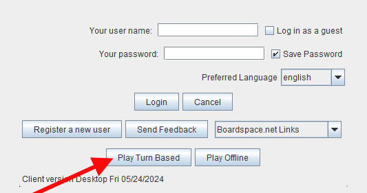
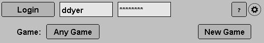
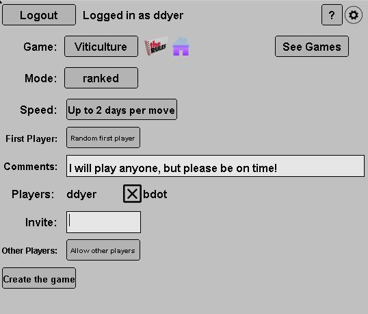
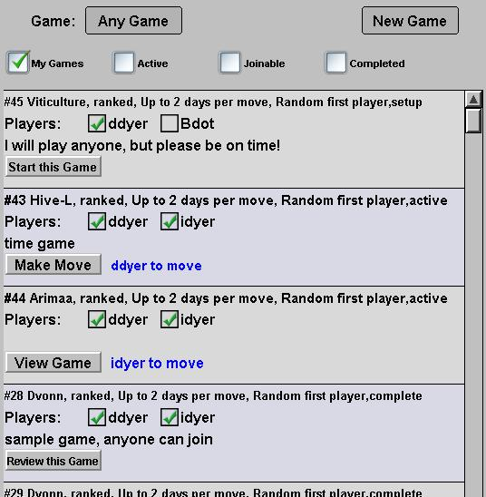

Turn Based Games
You
can play most Boardspace games in asynchronous, "Turn Based" mode.
In this mode, you're expected to make the next move within a few
days, but not immediately. The actual play is done through the
same game interface as for realtime games, except that you can only
make one move at a time.
Getting Started
Select the "Play Turn Based" button in the first screen. |  |
Log InOnce
in the turn based mode, you must log into your boardspace account.
Once logged in, you can either manage your existing games or
create a new game. |  |
Create a new GameSelect the game parameters.
- There are no restrictions on who can play whom, but you can add comments about your expectations
- In any case, as the creator of the game you can reject unsuitable opponents and you will decide when to start the game.
- Players you explicitly invite will have to accept the invitation before the game can start.
- The "See Games" button will take you back to the main screen.
|  |
Manage your games.Use the checkboxes to filter the games you want to see. - My Games filters the selection to only games you created, or you are playing in, or are explicitly invited to join.
- In Progress filters the selection to only games that are in progress.
- Joinable filters the selection to only games you could join.
- Completed filters the selection to games that were recently completed.
Games Setting Up- To join a game, check your name in the player list.
- To cancel a game that you created, uncheck your own name.
- To remove a player who tried to join, uncheck their name.
- If the roster is satisfactory, click on Start this Game
Games in Progress- click on Make Move to launch the game interface to make your move.
- use View Game to view the game when it isn't your move.
Completed Games
- you can review recently completed games. Completed games are purged after a while.
- you also review them in the regular online or offline review rooms.
| 
|
| |
Turn Based Rankings
Turn
based games can be either ranked or unranked. If ranked, the
rankings are completely "separate but equal" to the rankings for
realtime games.